Overview
In this workbook, we will learn the process of importing data into R, which consists of
- making sure the data has the right shape
- saving the data in an R-friendly format
- importing the data from RStudio
Here is a video where these steps are briefly explained:
Shaping the data
First let’s talk about data shape. If you want to import data into R - or into any statistical software really - you need your data to have the right shape. It should take the form of one single “rectangle” of data, made of columns and rows that don’t vary in size, and where
- Each row represents one observation
- Each column represents one variable
The R community calls it tidy data. Here is a nice presentation illustrating this tidy data concept: Make friends with tidy data
You also want your column names to be at the very top, in one single row, and the rest of your data to start right below this first row, like in this screenshot.

Everything in your rectangle of data should be part of your data. There’s no problem with having empty cells, but these have to be empty because the corresponding values are missing.
Avoid merging cells
In spreadsheets like Excel, it is tempting to merge cells in order to make things look nicer. The issue is that merged cells don’t transfer well to other softwares. So if you want to look at your data from R or any other statistical software, don’t merge your cells. Instead, copy the value in all the corresponding cells. 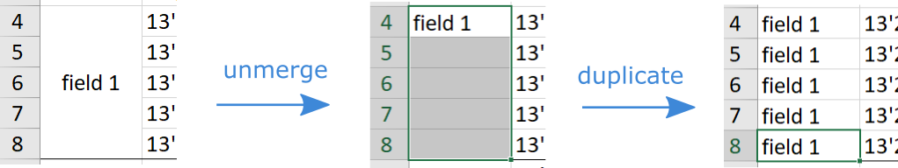
Column names good practice
It is best to keep your column names meaningful, yet short, and to avoid spaces, accent and other special characters, except for the dot and the underscore symbols. These probably sound a bit familiar. That’s because, the rules for naming columns are basically the same as the rules for naming objects (see workbook of the Intro module). And this is not surprising, because columns are basically objects that lie within dataframes.
As an example, a column called “Température Minimale”, could be shortened to “temp.min”.
Missing values
As said above, having missing data is totally fine. I mean, it may be an issue for your analysis, but it is not an issue for importing data. It is common for people to have a specific code to represent missing values, like -1, 99 or NA. These are all fine. What’s important is to choose a code that cannot be a value taken by your non-missing data, and to be consistent. If you code missing values differently for each of your columns, you’re asking yourself for trouble. My personal preference is to simply leave the cell empty. An empty cell is easy to spot and R will recognize it automatically as a missing value.
How to shape your data
Ideally the shape of your data should be thought through right from the start, at the design stage of your study, so that during data collection, your data already has the right shape. Unfortunately, things don’t always go as planned, and you may not always have control over the way the data is collected. In such case, you could end up with some data that is not in the shape described above.
There are two ways to deal with that. Either reshaping the data in a software like Excel, or doing so in R directly. The former is probably simpler at first, but at some point, when you are more experience with R, you should consider doing most of the work in R, so that you have a script documenting clearly what you’re doing and making everything you do to the data reproducible.
In both cases, make sure you keep a copy of your tidied data and your original row data, in case there is any issue.
File format
If your data lies in a spreadsheet like Excel, Google Sheets or LibreOffice Calc, we recommend you save your data as a csv file. There are external packages that can help you import data directly from Excel, but in our experience, things are more likely to go smoothly if you import your data from a csv file. A csv file is a simple text file where your values are separated by a specific character. As “csv” stands for “comma separated value”, you can guess that in general, this specific character is the comma.
Download this Excel file and follow the steps, using the tab called “Exple1 - good” as the data sheet we want to save: BasicExample.xlsx Note that if you don’t have Excel on your computer, use any spreadsheet software that you like. The steps should be very similar.
Click on the tab of the data that you want to save. Check that the data is in the right shape, then click File -> Save As
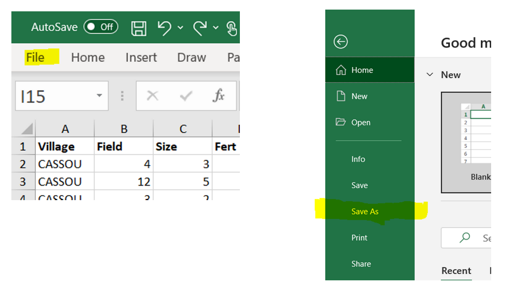
Choose where you want to save your file, give it a sensible names, and in Save as types, choose ‘CSV (comma delimited)’ (or similar). It is recommended to save it in the same folder as the R project.
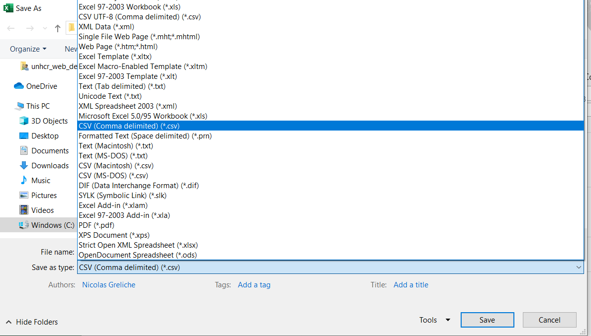
Finally click Save. You may then get a warning that you are saving only one of your sheets, which is normal. You just want to save the data in the active tab.
If your data comes from another statistical software like SAS, SPSS, STATA, or from an SQL database, then, your data is already in a nice format for importation.
Question: download the following Excel file containing data from the 2019 World Happiness Report and try to save it as a csv file, following the steps above. Call this file Happiness.csv Happiness.xlsx
Importing data
Have your R Markdown file ready
To start with, you should be on your project folder and have a new empty R Markdown file opened. To create a new R Markdown file go to File -> New file -> R Markdown...
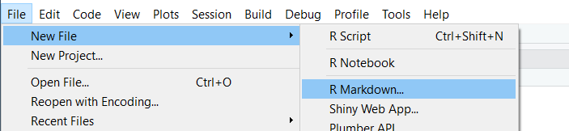
To make it empty, simply click Create Empty Document at the bottom left of the next window.
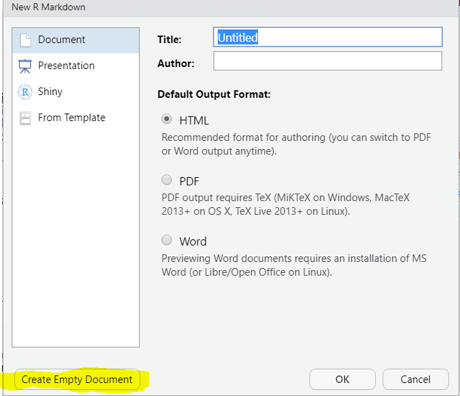
Importing your file
R can import data from many different format and we will not cover all of them here. In particular, we will not see how to retrieve data from an SQL database, as it is slightly more advanced than the scope of this course. The following documentation here should be a good starting point though. If you have any question related to it, don’t hesitate to post it in the “Out of scope questions” forum.
For data coming from SAS, SPSS or STATA, you will have to use an external package to import your file into R. There are multiple options, but we recommend you use the package haven, which is another package included in tidyverse. What’s nice with this package is that it is embedded in the RStudio importation menu, and so the method to import data works the same way as with a csv file. That is:
From Rstudio, click on the import dataset menu. It is located at the top right of your screen if you haven’t changed the default organisation of the Rstudio windows. 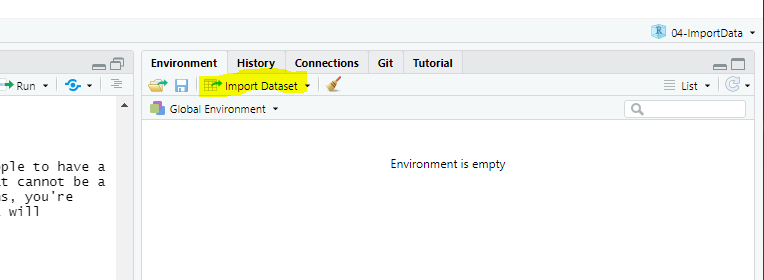
You can see that you have several options to choose from. If you were importing data from SAS, SPSS or STATA, you would use the relevant option at the bottom. This requires the package Haven to be installed, but as said before, it is part of tidyverse, so if tidyverse is installed, it should work well. You can also see the option “From Excel…”. So importing data directly from Excel is possible via the menu as well. But as said earlier, it is not uncommon to have unexpected issue when importing data directly from Excel, so we recommend to stick to an importation via csv file. And if your data is saved as a csv file, you should just click on the first option From Text (base) 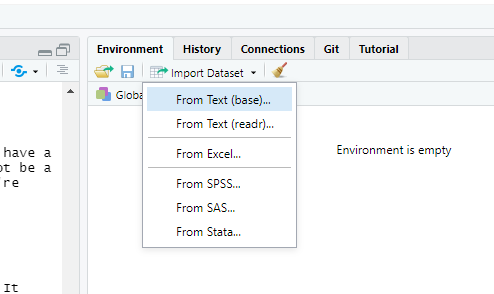
Locate your csv file 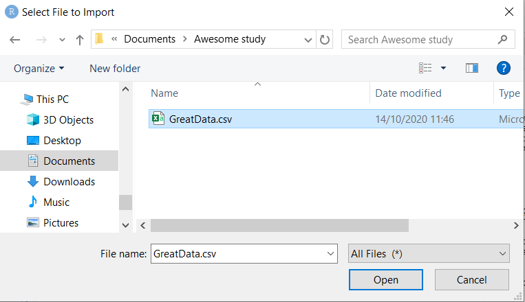
Check in the preview window that the importation seems to work well. If you see some issues like weird column names, weird rows or columns, play with the parameters on the left to fix the issues. Click Import 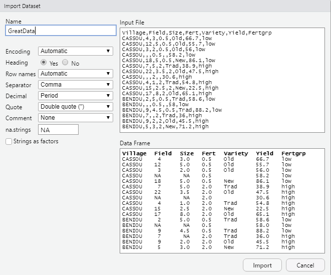
Check your environment window for the number of rows and columns of your new object. 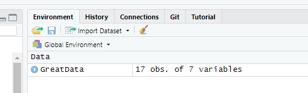
Click on the triangle next to the name of your object to have an overview of the column types. Check that the columns that should be numeric are not listed as character variables (chr). If you find such issue, it probably means that there is some non-numerical character(s) somewhere in your original data that prevented R to consider the column as numeric. 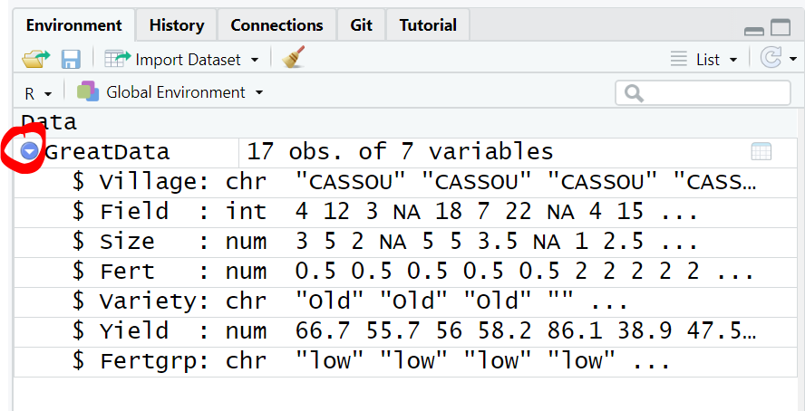
Copy the command that R just wrote in the console panel (only the read.csv() command. The View() command is an interactive command that should not be on your scripts). 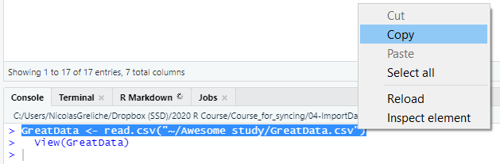
Insert a first R chunk at the top of your R Markdown file 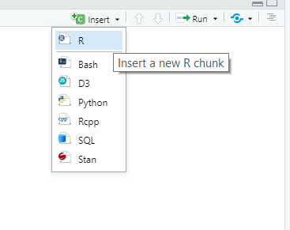
Then paste the importing command inside the R chunk 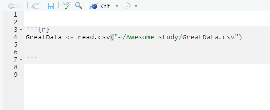
We are done with the importation step. We can now start working on this data. Don’t forget to load the libraries that you will need and to write text outside the R chunks to document what you’re doing. 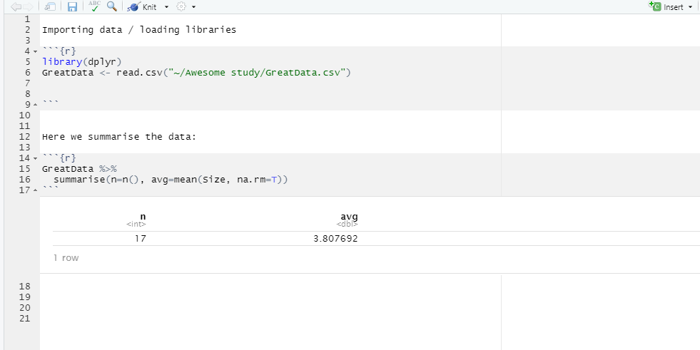
Having the importation command in your R Markdown script file is important, so that the next time you open RStudio, you don’t have to go through the importation process again. You can just run the relevant R chunk and your data will be imported!
Note: you can see that the importation command contains a path to your data file. So if you move your data, for example to place it in a specific data folder in your project, you’ll have to change the path.
Question: Follow the steps above to import the Happiness.csv file that you saved in the previous section. Check the appendix to know more about this dataset
Quiz
Question 1
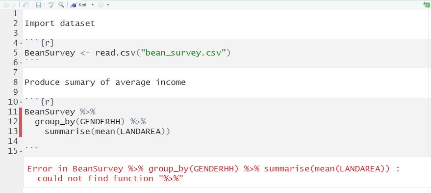
Question 2
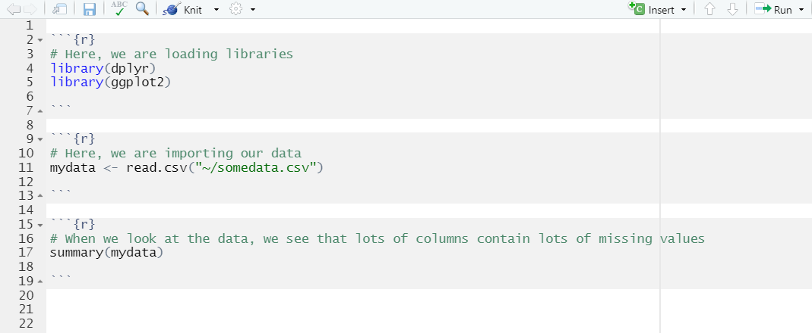
Question 3
Question 4
Exercises
Exercise 1: Now that you have imported the Happiness dataset into R – let’s do a quick exercise to recap what we learnt in Modules 1-3, but writing out the code entirely in RStudio instead of online.
- Find the 5 countries with the lowest ‘generosity scores’
- Produce a subset of countries which have below average scores for both GDP and generosity.
- Make a plot showing the relationship between generosity and GDP per capita
Exercise 2: Download the file below that contains the BeanSurvey dataset and the solutions for the module 3 exercises. Save these in your project folder. Import the data using RStudio menu and go through the R Markdown file to reproduce the solutions in your own machine
Appendix: ‘Happiness’ dataset
The data used for the questions in this workbook comes from the World Happiness Report 2019. The World Happiness Report is an annual publication of the United Nations Sustainable Development Solutions Network. It aims at ranking 156 countries by level of global happiness of their population, by doing an annual survey on their citizens.
In this dataset, the variables ‘GDP per capita’,‘Social support’,‘Healthy life expectancy’,‘Freedom to make life choices’,‘Generosity’ and ‘Perceptions of corruption’ are factors used to compute the Happiness Score (‘Score’).
The methodology, as well as more information about this publication, can be found here .
Appendix: ‘BeanSurvey’ dataset
The data we are using in this session is an extract of a survey conducted in Uganda from farmers identified as growing beans.
The dataset contains an extract of 50 responses to 23 of the survey questions, and has been imported to R as a data frame called BeanSurvey.
A summary of the columns in the dataset is below.
| Column | Description |
|---|---|
| ID | Farmer ID |
| VILLAGE | Village name |
| HHTYPE | Household composition |
| GENDERHH | Gender of Household Head |
| AGEHH | Age of Household Head |
| OCCUHH | Occupation of Household Head |
| ADULTS | Number of Adults within the household |
| CHILDREN | Number of Children (<18) within the household |
| MATOKE | Do they grow matoke? |
| MAIZE | Do they grow maize? |
| BEANS | Do they grow beans? |
| BANANA | Do they grow banana? |
| CASSAVA | Do they grow cassava? |
| COFFEE | Do they grow coffee? |
| LANDAREA | Land area of farm (acres) |
| LABOR | Labor usage |
| INTERCROP | Intercrops with beans |
| DECISIONS | Household decision responsibility |
| SELLBEANS | Do they grow beans for sale? |
| BEANSPLANTED_LR | Quantity of beans planted in long rain season |
| BEANSPLANTED_SR | Quantity of beans planted in short rain season |
| BEANSHARVESTED_LR | Quantity of beans harvested in long rain season |
| BEANSHARVESTED_SR | Quantity of beans harvested in short rain season |
Spend some time exploring the full dataset embedded below, to familiarise yourself with the columns and the type of data stored within each column. You may need to refer back to this data at times during this tutorial. Remember that R is case sensitive, so you will always have to refer to the variables in this dataset exactly as they are written in the data. There is a column in this data called “GENDERHH” but there is no column in this data called “GenderHH”.
(You can use the arrow keys on your keyboard to scroll right in case the data table does not fit entirely on your screen)
Appendix: Useful reference links
Illustrated presentation of ‘tidy data’: Make friends with tidy data
Video explaining the command to import text files into R - DataCamp:https://www.youtube.com/watch?v=Yy-ismDUkkQ
Article on the RStudio support site showing how to import data from different files via the RStudio import menu:Importing Data with RStudio
RStudio documentation on connecting to databases using R https://db.rstudio.com